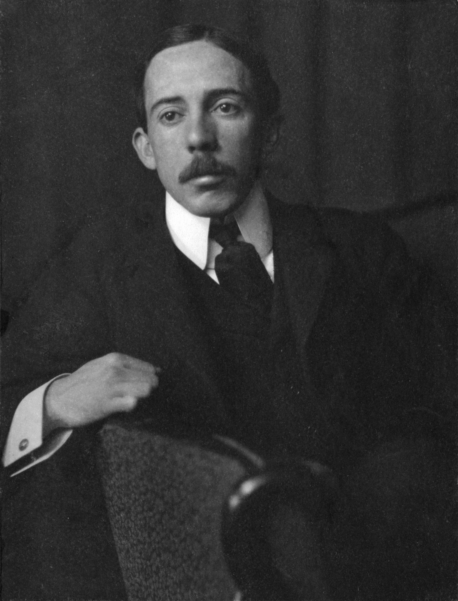

“Inventing is imagining what no one has thought;
is to believe what no one has sworn;
it is risking what no one has dared;
is to accomplish what no one has tried.
To invent is to transcend.”
Alberto Santos Dumont
1873 - 1932
“Inventing is imagining what no one has thought;
is to believe what no one has sworn;
it is risking what no one has dared;
is to accomplish what no one has tried.
To invent is to transcend.”
Alberto Santos Dumont
1873 - 1932

Alberto Santos Dumont was born in Palmira (currently Santos Dumont city) in the state of Minas Gerais, on July 20, 1873. He was the sixth child of Henrique Dumont and Francisca Santos Dumont. From an early age, his curiosity and genius were notorious, so he built his toys and repaired things. This restless spirit was later responsible for one of the great inventions of the 20th century: the airplane. On the advice of his father, he began to study mechanics, as he had always been interested in farm machinery.
His family moved to Rio de Janeiro and later, in 1879, to São Paulo, in the region of Ribeirão Preto, in order to dedicate themselves to coffee plantations.Thus, from 1891 onwards, he continued to further his studies in Paris, in the areas of science, engineering, physics, chemistry, mechanics, electricity and aeronautics.
In 1887, he built his first spherical balloon, nicknamed Brasil. This one presented many innovations for the time, it was the smallest ever built until then and when it took off the following year, for the first time, it was the focus of more experienced balloonists.
The construction of his first airship, the N-1, also dates from this time, which reached an altitude of 400 m on its first flight, but the landing ended in a fall, without serious injuries. The great innovation of the N-1 was the use of a combustion engine with petroleum-based fuel. His following airships kept the same idea as the first, but a little more robust, which allowed the flight with passengers and was even awarded by the newly founded air club in Paris.
After a successful flight over Paris that won him the important Deutsch de La Meurthe prize, the first to receive such an award for the achievement of completing an 11 km route in 30 minutes, which included going around the Eiffel Tower and returning to the same point. of departure. In 1902, Dumont left for the United States with the objective of commercializing his invention, he even met President Roosevelt and inventor Thomas Edson, who harshly criticized his project, which did not discourage the young inventor.


In the years after the end of the Great War, Dumont harshly criticized the use of aircraft as battle machines, even though he pondered its use in the importance of the Triple Entente victory. Affected by a strong picture of depression, he went through some nursing homes both in Brazil and in France.
His situation worsened when he saw the use of airplanes in the Constitutionalist Revolution of 1932, being vehemently opposed to what was happening, even sending a letter to the governor of the State of São Paulo, Pedro de Toledo. That same year, his depressive condition remained persistent and he ended up committing suicide in his room at the Hotel de la Plage, in Guarujá, on the coast of São Paulo.